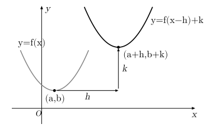
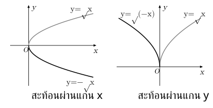

. ความสัมพันธ์และคู่อันดับ
ความสัมพันธ์จับคู่สิ่งที่เกี่ยวข้อง เช่น นักเรียน–คะแนน หรือราคา–จำนวนขาย เขียนเป็น คู่อันดับ
ลำดับของคู่อันดับมีความหมาย โดยทั่วไป กับ ไม่ใช่คู่อันดับเดียวกัน
ผลคูณคาร์ทีเซียน คือเซตของคู่อันดับทั้งหมดที่ตัวหน้าเป็นสมาชิกของ และตัวหลังเป็นสมาชิกของ ความสัมพันธ์จาก ไป คือสับเซตของ
โดเมน คือเซตของสมาชิกตัวหน้าที่ปรากฏในความสัมพันธ์ ส่วน เรนจ์ คือเซตของสมาชิกตัวหลังที่ปรากฏ
เช่น มีโดเมน และเรนจ์ สมาชิกที่ซ้ำกันในเรนจ์นับเพียงครั้งเดียว
. ความสัมพันธ์แบบใดเป็นฟังก์ชัน
ฟังก์ชัน คือความสัมพันธ์ที่สมาชิกแต่ละตัวในโดเมนจับคู่กับสมาชิกตัวหลังได้เพียงหนึ่งตัว พูดได้ว่า ใส่ค่า หนึ่งค่า ต้องได้ค่า เพียงค่าเดียว
ถ้าเขียน หมายถึงสมาชิกทุกตัวใน ต้องมีค่าฟังก์ชันหนึ่งค่าใน โดย เป็นโดเมน ส่วนเรนจ์อาจเป็นเพียงบางส่วนของ
หมายถึงค่าของฟังก์ชันเมื่อใส่ เช่น ถ้า จะได้
ระวัง: ต่างกันให้ค่า เท่ากันได้ เช่น มี แต่ยังเป็นฟังก์ชัน เพราะ แต่ละค่าให้ผลลัพธ์เพียงค่าเดียว
ตรวจฟังก์ชันด้วยเส้นแนวตั้ง: ตัดเกินหนึ่งจุดหมายถึง เดียวให้หลาย จึงไม่เป็นฟังก์ชัน
. การหาโดเมนและเรนจ์
เมื่อฟังก์ชันให้มาเป็นสูตรและไม่ได้ระบุโดเมน ให้หาค่า ที่แทนแล้วนิพจน์มีความหมายในระบบจำนวนจริง
เงื่อนไขที่ใช้บ่อย ได้แก่
- เศษส่วน: ตัวส่วนต้องไม่เป็นศูนย์ เช่น ใช้ ไม่ได้
- รากที่สอง: จำนวนภายในรากต้องไม่ติดลบ เช่น ต้องมี
ถ้ามีหลายเงื่อนไข ต้องใช้ค่า ที่ผ่านทุกเงื่อนไขพร้อมกัน
เรนจ์คือค่า ที่เกิดขึ้นได้จริงจากโดเมนนั้น เช่น เมื่อโดเมนเป็น มีเรนจ์ เพราะกำลังสองไม่ติดลบและให้ค่าไม่ติดลบได้ทุกค่า
ระวัง: ถ้าโจทย์จำกัดโดเมน เรนจ์อาจเปลี่ยนไป และถ้าสูตรมีตัวส่วน แม้ตัดตัวประกอบได้ก็ยังต้องเก็บข้อห้ามของสูตรเดิมไว้
. การดำเนินการและฟังก์ชันประกอบ
บวก ลบ คูณฟังก์ชัน: แทน เดียวกันในแต่ละฟังก์ชัน แล้วนำค่ามาดำเนินการ
- โดยต้องมี
โดเมนต้องใช้ได้ทั้ง ; ผลหารต้องเพิ่มเงื่อนไขตัวหารไม่เป็นศูนย์
ฟังก์ชันประกอบ คือการนำผลของฟังก์ชันหนึ่งไปใส่ในอีกฟังก์ชันหนึ่ง
หมายถึง ทำ ก่อน แล้วทำ
เช่น ถ้า และ จะได้
แต่
ระวัง: ลำดับมีผล และโดเมนของ ต้องเป็นค่า ที่ใช้กับ ได้ พร้อมทั้งให้ อยู่ในโดเมนของ
. ฟังก์ชันหนึ่งต่อหนึ่ง ทั่วถึง และฟังก์ชันผกผัน
ฟังก์ชันหนึ่งต่อหนึ่ง คือฟังก์ชันที่ ต่างกันให้ผลลัพธ์ต่างกัน จึงไม่มีค่า เดียวกันที่มาจาก หลายค่า
ตรวจหนึ่งต่อหนึ่งด้วยเส้นแนวนอน: แต่ละเส้นตัดกราฟไม่เกินหนึ่งจุด
ฟังก์ชันทั่วถึง สำหรับ หมายถึงทุกสมาชิกของ เกิดเป็นผลลัพธ์ได้ หรือเรนจ์เท่ากับ
ฟังก์ชันผกผัน ทำงานย้อนกลับจากผลลัพธ์ไปหาค่าตั้งต้น ถ้า แล้ว
ต้องเป็นหนึ่งต่อหนึ่งจึงจะมีฟังก์ชันผกผันจากเรนจ์กลับไปยังโดเมนได้ ถ้าต้องการผกผันจาก กลับไป สำหรับ ต้องเป็นทั้งหนึ่งต่อหนึ่งและทั่วถึง
การหาสูตรผกผันทำได้โดยเขียน สลับ กับ แล้วแก้สมการหา เช่น สลับเป็น จึงได้
โดเมนกับเรนจ์ของฟังก์ชันผกผันสลับจากฟังก์ชันเดิม และกราฟสะท้อนกันผ่านเส้น
ระวัง: ไม่ได้หมายถึง และบางฟังก์ชันต้องจำกัดโดเมนก่อนจึงจะเป็นหนึ่งต่อหนึ่ง
. กราฟพื้นฐานและค่าสูงสุด–ต่ำสุด
กราฟพื้นฐานที่ควรรู้จัก ได้แก่
| สมการ | ลักษณะกราฟ |
|---|---|
| เส้นตรงที่มีความชัน และตัดแกน ที่ | |
| เมื่อ | พาราโบลา หงายเมื่อ และคว่ำเมื่อ |
| กราฟรูปตัว มีจุดต่ำสุดที่ | |
| เริ่มที่ ใช้ได้เมื่อ และมี | |
| ใช้ ไม่ได้ และค่า ไม่เป็นศูนย์ |
สำหรับพาราโบลา ตำแหน่ง ของจุดยอดคือ
แทน ของจุดยอดใน เพื่อหา เมื่อโดเมนเป็น พาราโบลาหงายให้ต่ำสุด คว่ำให้สูงสุดที่จุดยอด
ถ้าเขียนเป็น จะเห็นจุดยอด ได้ทันที
ระวัง: ถ้าโจทย์จำกัดโดเมน ต้องตรวจว่าจุดยอดอยู่ในโดเมนหรือไม่ ถ้าหาค่าสูงสุดหรือต่ำสุดบนช่วงปิด ต้องพิจารณาค่าที่ปลายช่วงด้วย
. แนวข้อสอบที่เน้น: การเลื่อนกราฟ
เมื่อเปลี่ยนสูตรจาก ให้ดูว่าการเปลี่ยนอยู่ นอก หรือ ในค่า ที่ใส่เข้า
เมื่อ และ
| สมการ | การเลื่อน |
|---|---|
| เลื่อนขึ้น หน่วย | |
| เลื่อนลง หน่วย | |
| เลื่อนไปทางขวา หน่วย | |
| เลื่อนไปทางซ้าย หน่วย |
การเลื่อนในแนวนอนดูจากค่าที่ทำให้ ได้รับค่าเดิม เช่น จุดเดิมใช้ ถ้าสูตรใหม่เป็น ต้องมี จึงได้ จุดจึงเลื่อนไปทางขวา
โดยทั่วไป จุด บน จะย้ายเป็น บน

ถ้าโจทย์ให้กราฟมา ให้ดูจุดเด่น เช่น จุดยอดหรือจุดตัดแกน แล้วเทียบตำแหน่งเดิมกับตำแหน่งใหม่ก่อนเขียนสูตร
การเปลี่ยนกราฟที่ควรแยกจากการเลื่อน ได้แก่ ซึ่งสะท้อนผ่านแกน และ ซึ่งสะท้อนผ่านแกน

ระวัง: เครื่องหมายที่เปลี่ยนภายใน กับภายนอก มีผลคนละอย่าง อย่าตัดสินทิศทางจากเครื่องหมายเพียงอย่างเดียว
. แนวข้อสอบที่เน้น: สร้างฟังก์ชันรายได้แล้วหาค่าสูงสุด
โจทย์ราคาและจำนวนขายต้องแยกสามสิ่งให้ชัด คือ ราคาต่อชิ้น จำนวนที่ขายได้ และรายได้รวม
รายได้ ราคาต่อชิ้น จำนวนที่ขายได้
ถ้าการเพิ่มราคาทำให้จำนวนขายลดลงในอัตราคงที่ ให้กำหนดตัวแปรก่อนว่าแทนอะไร เช่น ให้ เป็นจำนวนครั้งที่เพิ่มราคา
ถ้าราคาเดิมคือ บาท ขายได้ ชิ้น และเพิ่มราคาครั้งละ บาทแล้วขายลดครั้งละ ชิ้น จะได้
- ราคาใหม่:
- จำนวนขายใหม่:
- รายได้:
เมื่อ และ กระจายแล้วจะได้ฟังก์ชันกำลังสองที่มีสัมประสิทธิ์ของ เป็นลบ กราฟจึงเป็นพาราโบลาคว่ำ ใช้จุดยอดช่วยหาค่าสูงสุดได้
กำหนดตัวแปร → เขียนราคา/จำนวนขายด้วยตัวแปรเดียว → คูณเป็นรายได้ → ตรวจโดเมน → หาค่าสูงสุด
ระวัง: ค่าตัวแปรที่จุดยอดอาจยังไม่ใช่สิ่งที่โจทย์ถาม ถ้าถามราคา ต้องนำกลับไปหาราคา ถ้าถามรายได้ ต้องแทนในฟังก์ชันรายได้
ตรวจจำนวนขายไม่ติดลบ; ถ้าจำนวนครั้งเพิ่มราคาเป็นจำนวนเต็ม ให้เทียบค่าที่ใช้ได้ใกล้จุดยอดและขอบเขต